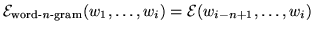

A definition of
that describes a word  -gram is thus:
-gram is thus:
|  | (14.5) |
In a good language model the choice of should be such that it provides a reliable predictor of the next word, resulting in classes which occur frequently enough in the training text that they can be well modelled, and does not result in so many distinct history equivalence classes that it is infeasible to store or analyse all the resultant separate probabilities.